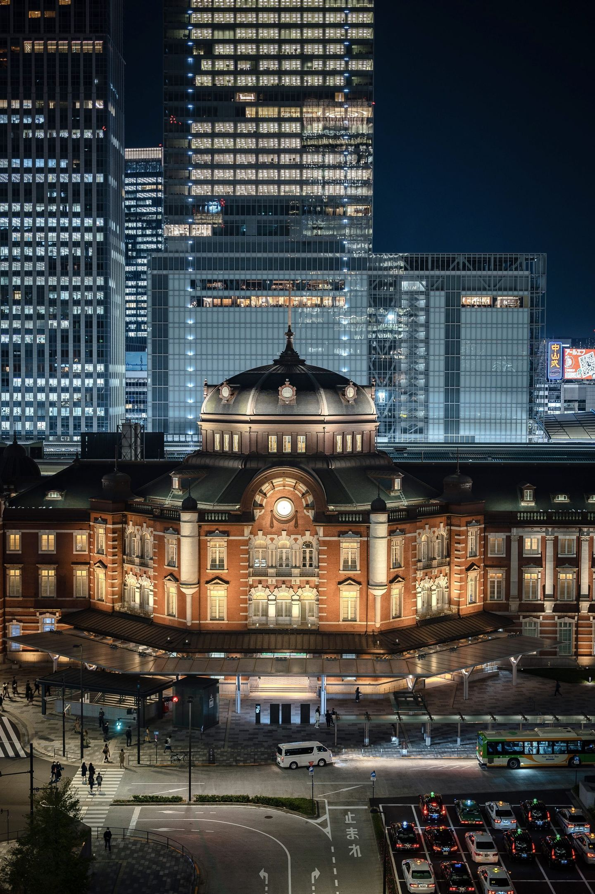
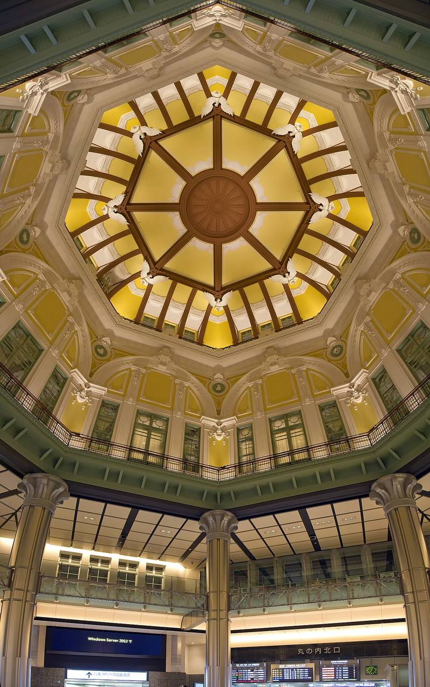
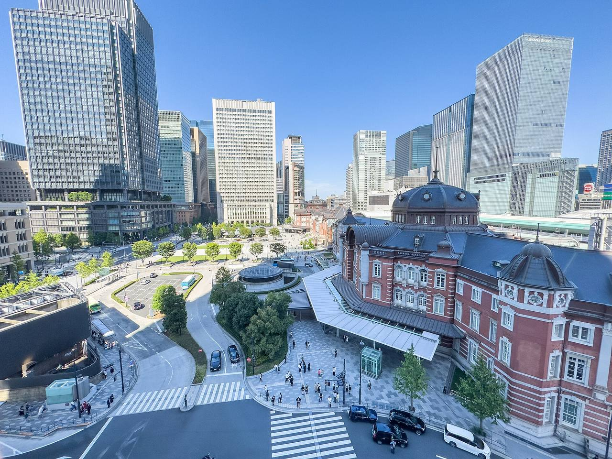
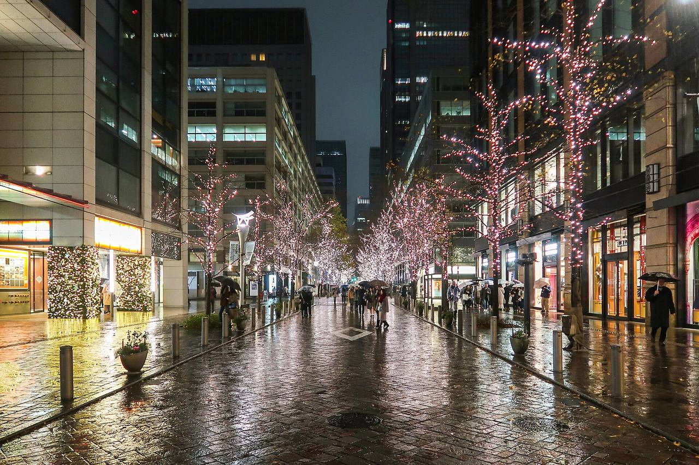
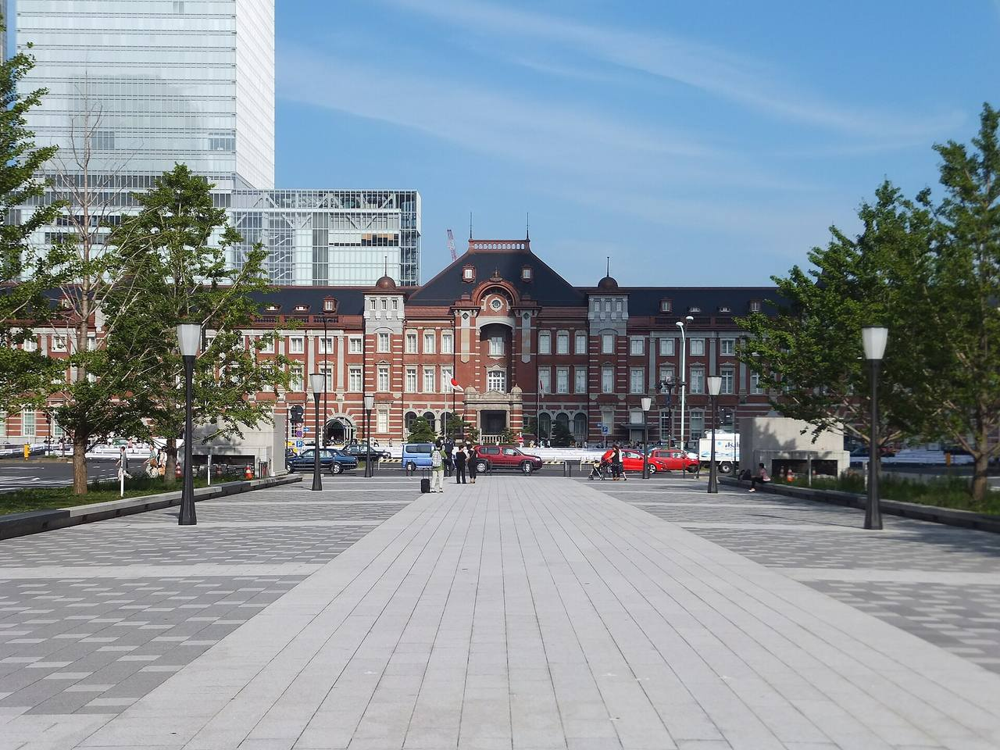

MARUNOUCHI STATION BUILDING
丸の内駅舎
赤レンガと白い花崗岩の帯が走る、辰野金吾の代表作。南北のドームを戴く姿は、東京の原風景です。
- 開業
- 1914年（大正3年）
- 設計
- 辰野金吾
- 全長
- 約335m
- 指定
- 国の重要文化財（2003年）
- 復原
- 2012年 完成
通信が不安定か、ファイルが見つかりません。ページを再読み込みしてみてください。
全国 8,381 駅・818 路線＋船・ヘリなど 18の路線図から、移動手段を比べられます。
駅・地名・建物を入力すると、行き方を比べられます。
1914年開業、日本の玄関口。赤レンガの駅舎を中心に、丸の内・八重洲・日本橋・大手町——徒歩圏に4つの顔を持つ「駅が街になる」エリアの案内です。行き方を探すときは、上の路線図で駅や地名を検索してください。
東京駅は1914年に開業し、丸の内駅舎の全長は335mあります。駅舎の保存・復原は2012年に完成し、徒歩圏には4つのエリアが広がります。
辰野金吾の設計による丸の内駅舎は、2003年に国の重要文化財に指定され、2012年に創建時の姿へ復原されました。下の写真では、案内カードがキャンバスの中をレンズのように動きます（対応ブラウザのみ）。

赤レンガと白い花崗岩の帯が走る、辰野金吾の代表作。南北のドームを戴く姿は、東京の原風景です。
HTML-IN-CANVAS FALLBACK — このブラウザでは通常カード表示
PHOTO: 東京駅丸の内駅舎（夜景）— 撮影 Kakidai（Wikimedia Commons、CC BY-SA 4.0）

丸の内北口・南口の改札を抜けると、頭上には復原された八角形のドーム。黄土色の天井には干支のレリーフが配され、戦前の意匠が現代に蘇りました。
駅舎内には美術館東京ステーションギャラリーと、駅舎そのものがホテルになった東京ステーションホテルも。「乗るためだけの駅」から「過ごすための駅」へ——この変化こそ、東京駅が街になった理由です。
PHOTO: 丸の内駅舎ドーム（復原後）— 撮影 Kei365（Wikimedia Commons、CC BY-SA 3.0）
改札を出る方角で、街の性格はまったく変わります。目的に合わせて出口を選ぶのが、東京駅を楽しむ第一歩です。
駅舎と皇居に挟まれた、東京の「顔」。
赤レンガの駅前広場から行幸通り、丸の内仲通りへ。美術館、カフェ、ブランド店が整然と並ぶ、東京で最も端正な街並みです。
新幹線の玄関口は、旅の前後がいちばん充実する場所。
巨大な地下街と再開発ビルが広がる実用派エリア。駅弁、ラーメン、お土産——「あと15分」がいちばん楽しいのはこの出口です。
五街道の起点、日本の道路の原点がある街。
江戸の商業の中心地は、いまも老舗が息づく街。再開発で生まれた新しい複合施設と、創業百年超の暖簾が同居します。駅からは北へ徒歩圏。
日本経済の中枢は、静かに使える穴場でもある。
東京駅とは地下通路で直結。皇居ランの拠点、温泉施設、緑の森まで揃う、知る人ぞ知る使い勝手のいいエリアです。
時間がない日でも、この4か所を回れば東京駅の「いま」が分かります。すべて駅から徒歩5分圏内です。
復原で蘇った八角形ドーム。干支のレリーフと回廊を見上げる、駅舎内いちばんの見どころ。
PHOTO: 撮影 Kei365（Wikimedia Commons、CC BY-SA 3.0）

旧東京中央郵便局の屋上庭園。駅舎と駅前広場を真正面に望める、無料の展望スポット。
PHOTO: 撮影 Dick Thomas Johnson（Wikimedia Commons、CC BY 2.0）


駅前広場から皇居へまっすぐ伸びる、東京の象徴的なアプローチ。駅舎の正面写真はここから。
PHOTO: 撮影 掬茶（Wikimedia Commons、CC BY-SA 3.0）
駅ナカ・駅チカの食と買い物は、東京駅のもうひとつの主役。待ち時間が短いほど、選ぶ楽しさが増えます。
全国の人気店が集まるラーメンの殿堂。行列の絶えない名店が徒歩ゼロ分でハシゴできます。
全国各地の駅弁が集結する駅弁専門店。旅の始まりは、ここで弁当を選ぶところから。
限定スイーツと「新・東京土産」の宝庫。エキナカ初登場の店が並ぶ、東京駅最大級の商業空間。
人気キャラクターの公式ショップがずらり。子どもも大人も足が止まる、八重洲地下の名物通り。
弁当・惣菜・スイーツが集まるデパ地下。出張帰りの手土産選びなら、まずここへ。
屋上庭園とセットで楽しめる食のフロア。駅舎を眺めながらの食事は丸の内ならでは。
新幹線6方面と在来線、地下鉄が集まる日本最大級のターミナル。主要目的地への所要時間の目安です（乗車時間ベース）。詳しい行き方は各ガイドへ。
初めての東京駅散策に。駅舎の眺めから始めて、夕方のライトアップで締める王道ルートです。
屋上庭園から駅舎と駅前広場を一望。まず「全体像」をつかんでから歩き始めます。
丸の内南口ドームを見上げ、駅舎内の美術館へ。レンガ壁の展示室はここだけの体験。
八重洲地下へ移動して名店ラーメンのランチ。食後はキャラクターストリートを冷やかしに。
石畳の並木道でカフェとショッピング。三菱一号館美術館の庭園もすぐそばです。
ライトアップが始まる駅舎で締めくくり。昼とは違う、黄金色の東京駅に出会えます。
駅での空き時間の使い方は、東京駅での空き時間プラン（2時間）や1時間プランもどうぞ。
この区画は、東京駅エリアガイドのデザイン刷新コンセプトを実サイトへ移したものです。背景の粒子の流れは WebGPU（未対応環境では Canvas 2D）で描画し、駅舎セクションの案内カードは HTML-in-Canvas 対応ブラウザでは DOM のままキャンバスへ取り込んでレンズ状に歪ませています。どちらの技術も、非対応環境では通常の表示に自動でフォールバックします。
掲載情報はエリア紹介のための概要です。営業時間・イベント等の最新情報は各公式サイトでご確認ください。
PHOTOS: 丸の内駅舎 夜景（Kakidai、CC BY-SA 4.0）／ ドーム（Kei365、CC BY-SA 3.0）／ KITTEガーデン眺望（Dick Thomas Johnson、CC BY 2.0）／ 丸の内仲通り（Wpcpey、CC BY 4.0）／ 行幸通り（掬茶、CC BY-SA 3.0）— いずれも Wikimedia Commons のファイルで、撮影者・ライセンスは写真ごとの «PHOTO:» 表記と出典一覧に記載
RENDERING — （読み込み中）
HTML-IN-CANVAS — 未対応のため通常の DOM カード表示にフォールバック
MOTION — （JavaScript で判定）